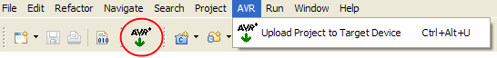

Before you can upload the project to your target hardware the project needs to be build to generate the flash image file.
Right click on the project and select Build Project. If you do not have the Build Project entry in the project context menu you probably have autobuild switched on. See here on how to switch the autobuild feature off.
You should see something like this
Create Flash image (ihex format) avr-objcopy -R .eeprom -O ihex AVRtest.elf "AVRtest.hex" Finished building: AVRtest.hex
in your output to indicate that the flash image file has been successfully created.
Now you are set to start the upload. For your convenience the plugin has four different methods to start the upload, but they all act the same. Probably the easiest way is to select your project (single left click) and then use the upload toolbar button:

Other methods are the via the main menu AVR > Upload Project to Target Device entry (which will also show you the current key shortcut for your platform), or via the project context menu (right click on the project > AVR > Upload Project to Target Device)
The upload is started...
and the output from avrdude is logged in the console view
Launching F:\WinAVR\bin\avrdude -pm8515 -cstk500v2 -y -u -Uflash:w:AVRtest.hex:a Output:
avrdude: AVR device initialized and ready to accept instructions Reading | ################################################## | 100% 0.02s
avrdude: Device signature = 0x1e9306 avrdude: NOTE: FLASH memory has been specified, an erase cycle will be performed To disable this feature, specify the -D option. avrdude: erasing chip avrdude: reading input file "AVRtest.hex" avrdude: input file AVRtest.hex auto detected as Intel Hex avrdude: writing flash (104 bytes): Writing | ################################################## | 100% 0.03s avrdude: 104 bytes of flash written avrdude: verifying flash memory against AVRtest.hex: avrdude: load data flash data from input file AVRtest.hex: avrdude: input file AVRtest.hex auto detected as Intel Hex avrdude: input file AVRtest.hex contains 104 bytes avrdude: reading on-chip flash data: Reading | ################################################## | 100% 0.02s avrdude: verifying ... avrdude: 104 bytes of flash verified avrdude done. Thank you.
avrdude finished
If the output looks something like the above your project has been successfully uploaded to the target MCU. If not - and you did not get a meaningful error message from the plugin - you should check the avrdude manual for troubleshooting.
This completes the Upload a project to the target device with avrdude tutorial.
© 2007,2008 Thomas Holland